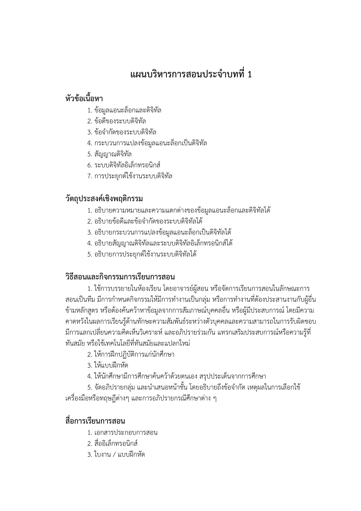
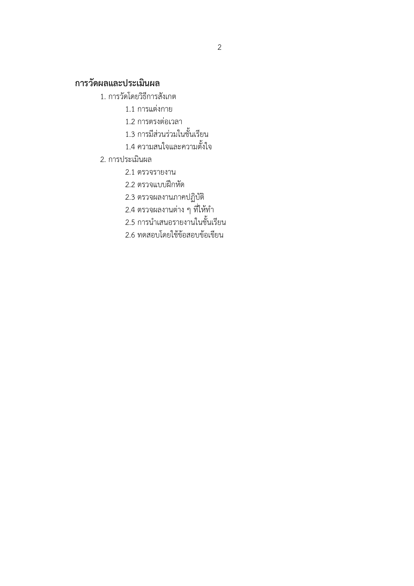

<mat-card class="example-card">
    <!--  -->

</mat-card>
<mat-card class="example-card">
    <mat-card-content>
        
        
    </mat-card-content>
</mat-card>


<mat-card style="position: fixed;right: 0;bottom: 50%;background-color: transparent;">
    <button [routerLink]="['/Pretest1']" style="font-size: 24px;padding: 10px;border-radius: 100px; background-color:gold;" mat-raised-button>Pretest<mat-icon>{{'double_arrow'}}</mat-icon></button>
</mat-card>